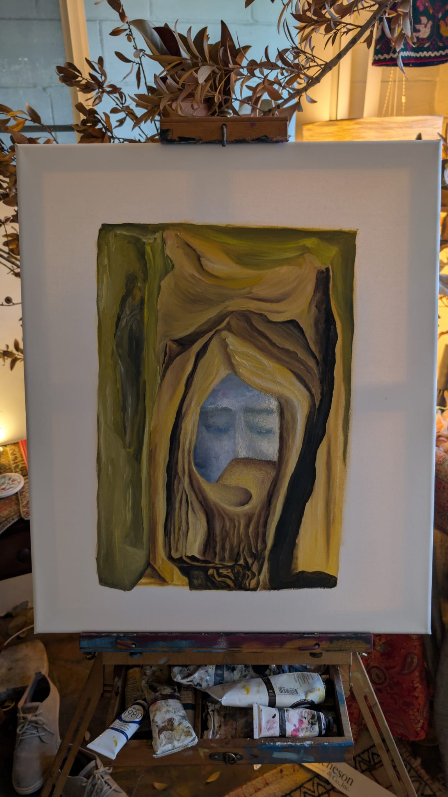
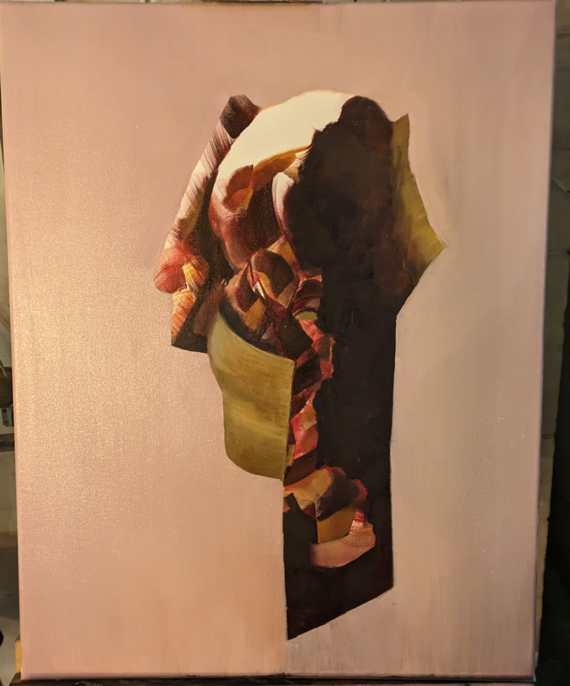

Portfolio - Recent Works

Blue
Oil on canvas exploring the depths of consciousness through the feminine figure. The work emerges from cloud painting technique, where random patterns guide the artistic process.
In the garden of Venus, where roses bloom
And the air is thick with the scent of love,
There walks a figure, wrapped in blue,
Her eyes reflecting the sky above.
She moves like water, fluid and free,
Her presence a mystery to behold,
In her hands she carries the key
To stories that have never been told.
Blue is the color of her soul,
Deep as the ocean, bright as the sky,
In her embrace, we become whole,
As she teaches us how to fly.
And the air is thick with the scent of love,
There walks a figure, wrapped in blue,
Her eyes reflecting the sky above.
She moves like water, fluid and free,
Her presence a mystery to behold,
In her hands she carries the key
To stories that have never been told.
Blue is the color of her soul,
Deep as the ocean, bright as the sky,
In her embrace, we become whole,
As she teaches us how to fly.

Two In Mirror And Both In A Mirror
An exploration of duality and infinite reflection. The work examines the nature of consciousness through mirrored forms and golden light.
Two figures stand before the glass,
Each reflecting the other's face,
In infinite regress they pass,
Through time and space.
Golden light surrounds them both,
As they contemplate their shared existence,
In this moment, they take an oath
To honor their persistence.
Mirror within mirror, soul within soul,
They dance the dance of duality,
Each playing their essential role
In the grand symphony.
Each reflecting the other's face,
In infinite regress they pass,
Through time and space.
Golden light surrounds them both,
As they contemplate their shared existence,
In this moment, they take an oath
To honor their persistence.
Mirror within mirror, soul within soul,
They dance the dance of duality,
Each playing their essential role
In the grand symphony.

One
A meditation on unity and singularity. The work explores the concept of oneness through abstract forms and organic shapes.
In the beginning, there was One,
A single point of light,
Before the dance had begun,
Before the day and night.
From this singularity,
All things began to flow,
Creating multiplicity
From the seed below.
Yet in each thing, the One remains,
A spark of the divine,
Through joy and through our pains,
The One continues to shine.
A single point of light,
Before the dance had begun,
Before the day and night.
From this singularity,
All things began to flow,
Creating multiplicity
From the seed below.
Yet in each thing, the One remains,
A spark of the divine,
Through joy and through our pains,
The One continues to shine.

Peacock
A celebration of natural beauty and splendor. The peacock's magnificent display becomes a metaphor for artistic expression and the beauty of existence.
Behold the peacock's splendid tail,
A fan of iridescent light,
Each feather tells a different tale,
Of beauty shining bright.
In his display, we see reflected
The glory of creation's art,
Each color carefully selected
To play its perfect part.
So too the artist spreads his wings,
To show the world his inner light,
And in the joy that beauty brings,
We find our own delight.
A fan of iridescent light,
Each feather tells a different tale,
Of beauty shining bright.
In his display, we see reflected
The glory of creation's art,
Each color carefully selected
To play its perfect part.
So too the artist spreads his wings,
To show the world his inner light,
And in the joy that beauty brings,
We find our own delight.

Sealed
An exploration of boundaries and containment. The work examines what lies beneath the surface and the mysteries that remain hidden.
Behind the seal, a mystery lies,
A secret waiting to be told,
Hidden from our prying eyes,
A story yet to unfold.
What treasures might be hidden there?
What wisdom from the ancient past?
What dreams and hopes beyond compare?
What memories that always last?
The seal protects what must remain
Until the time is right to see,
When light will shine through every vein,
And truth will set us free.
A secret waiting to be told,
Hidden from our prying eyes,
A story yet to unfold.
What treasures might be hidden there?
What wisdom from the ancient past?
What dreams and hopes beyond compare?
What memories that always last?
The seal protects what must remain
Until the time is right to see,
When light will shine through every vein,
And truth will set us free.

Uno Eye
A study of perception and vision. The single eye becomes a symbol of consciousness and the way we see and interpret the world.
One eye sees what others miss,
The hidden patterns in the air,
The subtle dance of light and bliss,
The beauty everywhere.
Through this lens of consciousness,
We view the world with clarity,
Each moment filled with tenderness,
Each sight a rarity.
The eye that sees with love and grace,
Discovers wonders in the small,
And finds in every time and place,
The miracle of all.
The hidden patterns in the air,
The subtle dance of light and bliss,
The beauty everywhere.
Through this lens of consciousness,
We view the world with clarity,
Each moment filled with tenderness,
Each sight a rarity.
The eye that sees with love and grace,
Discovers wonders in the small,
And finds in every time and place,
The miracle of all.

Veils Unveiled
An exploration of revelation and truth. The work examines the layers of perception and what lies beneath the surface of appearances.
Layer by layer, the veils fall away,
Revealing truth beneath the guise,
As light breaks through the dark of day,
And opens up our eyes.
What was hidden now is clear,
What was secret now is known,
As we cast away our fear,
And claim what is our own.
In the unveiling, we find grace,
A beauty that was always there,
Written in the lines of face,
And floating in the air.
Revealing truth beneath the guise,
As light breaks through the dark of day,
And opens up our eyes.
What was hidden now is clear,
What was secret now is known,
As we cast away our fear,
And claim what is our own.
In the unveiling, we find grace,
A beauty that was always there,
Written in the lines of face,
And floating in the air.

Venus
A celebration of feminine beauty and grace. The work explores the archetype of Venus and the power of love and beauty in human experience.
Venus rises from the sea,
Her beauty lighting up the sky,
A vision of divinity,
That makes the heart sigh.
In her presence, love awakens,
And beauty flows like wine,
As every heart that love forsakens,
Finds its way back to the divine.
She teaches us that beauty's power
Lies not in form alone,
But in the grace of every hour,
And love that makes us whole.
Her beauty lighting up the sky,
A vision of divinity,
That makes the heart sigh.
In her presence, love awakens,
And beauty flows like wine,
As every heart that love forsakens,
Finds its way back to the divine.
She teaches us that beauty's power
Lies not in form alone,
But in the grace of every hour,
And love that makes us whole.

Wanderers of Desert
A meditation on journey and discovery. The work explores the vastness of the desert and the human spirit's quest for meaning and connection.
Across the endless desert sand,
The wanderers make their way,
Guided by an unseen hand,
Through night and through the day.
In the vastness, they find peace,
In the silence, they hear truth,
As their journey brings release
From the burdens of their youth.
The desert teaches them to see
The beauty in the barren land,
And in their hearts, they come to be
At one with what was planned.
The wanderers make their way,
Guided by an unseen hand,
Through night and through the day.
In the vastness, they find peace,
In the silence, they hear truth,
As their journey brings release
From the burdens of their youth.
The desert teaches them to see
The beauty in the barren land,
And in their hearts, they come to be
At one with what was planned.